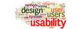

Infos zur Webprogrammierung
- CSS
- Diese Seite bietet einen Einblick in Cascading Style Sheets (CSS), gibt Auskunft über die Entstehung sowie die Entwicklungsgeschichte, den Gebrauch und die eigentliche Syntax. Mann kann sich über die Zusammensetzung der Befehle informieren und mithilfe von Beispielen auch grafisch in die Sprache einlesen. Sie stellt auch weiterführende Links (Referenzen) zum genaueren Nachlesen.
- Hier findet man eine Zusammenstellung der CSS-Befehle, sortiert nach ausgewählten Kategorien und erklärt in ihrer Bedeutung und in Nutzen.
- HTML 5
- Dieser Eintrag in Wikipedia bietet einen Einblick und somit einen Einstieg in das neue HTML 5, geht dabei auf die Entstehung und Entwicklung ein, beschreibt auch Unterschiede zu vorangegangen Versionen und gibt ebenfalls Referenzen zu weiterführenden Seiten und zur Literatur, für genauere Informationen.
-
https://developer.mozilla.org/de/docs/Web/HTML/HTML5/HTML5_element_list
Diese Seite stellt die Befehle/Vokabeln von HTML 5 zusammen, geordnet in Sinnabschnitte, bzw. nach Verwendungszweck. Außerdem bietet sie zu jedem Eintrag eine entsprechende Beschreibung. - XML
- Dieses von w3schools.com bereitgestellte Tutorial erklärt in einfach gegliederten Schritten nacheinander die Extensible Markup Language (XML). Es werden die grundlegenden Fragen, Was?, Warum?, Wie?, beantwortet. Es wird erklärt welche Unterschiede es, im Gebrauch, der Schreibweise, der Regelungen, zu HTML gibt, aber auch welche Gemeinsamkeiten, um XML besser erlernen zu können, vorhanden sind.
- Java Script
- Ebenso wie der Wikipedia Eintrag zum CSS oder zu HTML 5 (s. Oben) stellt dieser Informationen zu JavaScript. Man findet Informationen zur Entstehung, Bedeutung und Verwendung und kann Befehle, also Vokabeln der Skriptsprache geordnet nach Funktion und Bedeutung (Bsp.: Kontrollstrukturen oder Funkionen), entnehmen. Auch findet man wieder Verlinkungen zur Referenzen, die als weitere Informationsquellen dienen, sowie Verweise auf Literatur zum Thema.
- Webstandards
- Hier findet man eine Beschreibung und Erklärungen zu den Webstandards wie das W3C sie definiert. Man erhält einen Einblick was damit gemeint ist und was das Ziel, bzw. der Vorteil von Webstandards ist. Es wird auch aufgelistet welche Kriterien Webstandards erfüllen um als solche gesehen zu werden. Auch werden weiterführende Links zum Thema bereitgestellt.
- Validierung
- Auf dieser Seite wird einfach erklärt was man unter dem Begriff Validierung im Bereich Informatik versteht um beim Benutzen solcher Software die Hintergründe und Arbeitsweise verstehen und nachvollziehen zu können.
- Ein Programm, welches zur Validierung dient stellt der W3C kostenlos zur Verfühgung.
- Usability
-

http://www.nngroup.com/articles/usability-101-introduction-to-usability/
Diese Seite beantwortet grundlegende Fragen zum Thema Usability, zu deutsch Verwendbarkeit oder Nutzbarkeit. So erfährt man „Was?“ mit Usability gemeint ist, wie sie sich auszeichnet, „Warum?“ dieses Qualitätsmerkmal wichtig im Umgang mit User-Interfaces ist, „Wie?“ man die Nutzbarkeit verbessert und „Wann?“ im Arbeitsprozess auf diese Eigenschaft geachtet werden muss. - Accessibility
- Ebenso wie die Website zum Thema Usability geht diese Seite auf elementare Fragen, wie „Was?“, „Weshalb?“ und „Wie?“ ein. Um den Leser das Thema „Zugänglichkeit“ näher zu bringen. Des weiterem stellt das W3C weiterführend Links bereit, die mehr Hintergrundinformationen bieten.